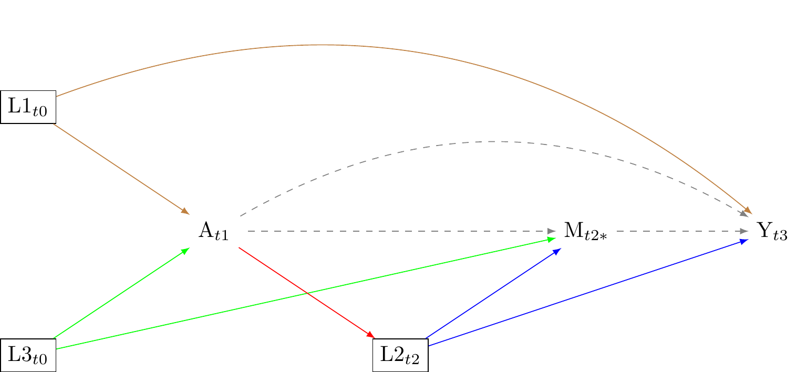

| Group | Units that receive exposure (A=1) | Units that recieve no exposure (A=0) |
|---|---|---|
| Y(1) | Observable | Counterfactual |
| Y(0) | Counterfactual | Observable |
Better causal diagrammes (DAGS) for counterfactual data science
Abstract
Introduction
\[A \coprod Y(a)\] \[A \cancel{\coprod} Y(a)| L\]
Objective
Correlation is not causation. However, across many human sciences, persistent confusion in the analysis and reporting of correlations has limited scientific progress. The correlations in observed data are frequently biased indicators of causality. This problem is widely known. Nevertheless, many researchers report correlations using hedging language that may suggest causation. Widespread practices of reporting correlations – in which I have regrettably participated – has led to a “causality crisis” (Bulbulia 2022). The problem is a crisis, because we cannot generally estimate causal effects from observational data. Widely adopted strategies for “control” fail. Addressing the causality crisis is arguably among science’s most pressing issues.
When integrated into methodologically rigorous workflows, causal diagrammes or causal directed acyclic graphs – causal “DAGs” – may be powerful tools for identifying causation.1 Yet unscrupulous DAGs operate in much the same way as hedging correlational language, suggesting entitlement to causal inferences where none are warrented. For example, when researchers lack time-series data they cannot generally estimate unbiased causal effects(VanderWeele 2015). Thus, cross-sectional researchers who use DAGs to report the unrealistic assumptions embedded in their analyses use the tool to disguise unwarrented confidence. Ideally causal diagrammes would be equipped with safety mechanisms that prevent such self-inflicted injuries.
Here, I develop a guide to writing causal diagrammes that is grounding in temporally ordered representations of their key elements – what might be called chronologically conscientious causal DAGs. We shall see that attention to temporal order in the spatial organisation of a DAG may greatly assist researchers in avoiding the pitfalls of unscrupulous DAGs. Although no inferential tool is user-proof, the application of chronologically conscientious DAGs may improve saftey. Chronologically conscientious causal diagrammes are DAGs with airbags.
There are many excellent resources for drawing causal diagrammes (Rohrer 2018; Hernan and Robins 2023; Cinelli, Forney, and Pearl 2022; Barrett 2021; McElreath 2020).2 One may reasonably question whether another tutorial merely adds clutter. The approach to drawing causal diagrammes that I present hopes to contributes to previous attempts in five ways. First, I link graphs to the counterfactual frameworks that are necessary for conceptualising causality. Second, as mentioned, I underscore the importance of chronology in the presentation of the graph. Along the way, I use causal graphs to examine the concepts of interaction and mediation, again with the aim of guiding applied researchers clear of trouble. Third, I show how causal diagrammes to recommend a three-wave panel design for recording cultural evolutionary dynamics in the present. Fourth, I consider the problem of selection bias three-wave panel designs, and develop recommendations for applied researchers. Fifth, I consider the problem of measurement bias in three-wave panel designs, and develop recommendations for applied researchers. I conclude with a brief compendium of practical advice to help researchers avoid abominable DAGs and causal inferences.
The article is organised as follows:
Part 1. develops the connection between causal diagrammes and the potential outcomes framework. Understanding this connection is important. Whereas causal diagrammes help researchers to answer questions, we must first understand how to ask causal questions. Without such comprehension, causal graphs can be, at best, unproductive, and at worst, deceptive.
Part 2. reviews the four elemental types of confounding, and uses chronologically conscientious causal diagrammes to elucidate their properties. Although this discussion replicates material from other tutorials, by emphasising the temporal order in spatial structure of the graph the conditions in which we may identify causality in the presence of confounding become more apparent. Here, I show how causal graphs may clarify concepts of interaction, mediation, and treatment-confounder feedback of the kind we may expect to be pervasive time-series data. Finally, I describe a simple template that may be useful for evolutionary human scientists, which clarifies how three-waves of data collection may be used to estimate causal effects.
Part 3. Applies chronologically conscientious causal diagrammes to motivate three-wave panel designs for evolutionary social sciences
Part 4 Addresses substanative problems of selection bias, focussing attention on the imperatives for adequate sampling and retention in the three-wave panel design.
Part 5. Addresses substanative problems of measurement error, focussing attention on the imperatives of (a) ensuring good measures (b) assessing pathways for confounding (c) performing sensitivity analyses.
Technical details are presented in an Appendix.
Part 1. Identifiability assumptions
Causal diagrammes are powerful tools for answering causal questions. However before we can answer a causal question, we must first understand what is involved when we ask a causal question. In this section I review key concepts and identification assumptions.
The fundamental problem of causal inference
We say that \(A\) causes \(Y\) if changing \(A\) would have made a difference to the outcome of \(Y\). The use of the subjective “would have” reveals the need for counterfactuals when conceiving of causal effects. To infere a causal effect requires counterfactual data-science.
Suppose there is evidence that cultures believing in Big Gods demonstrate greater social complexity. We are interested in estimating the causal effect of belief in Big Gods on social complexity. Here, the belief in Big Gods is the “exposure” or “treatment” of interest.
We define two counterfactual (or “potential”) outcomes for each culture in a population:
- \(Y_i(a = 1)\): The social complexity of culture \(i\) if they believed in Big Gods. This is the counterfactual outcome when \(A_i = 1\).
- \(Y_i(a = 0)\): The social complexity of culture \(i\) if they did not believe in Big Gods. This is the counterfactual outcome when \(A_i = 0\).
Within a counterfactual framework, the causal effect of belief in Big Gods on social complexity for culture \(i\) may be defined as a contrast, on the difference scale, between two potential outcomes (\(Y_i(a)\)) under the two different levels of the exposure (\(A_i = 1\) (belief in Big Gods); \(A_i = 0\) (no belief in Big Gods)). For simplicity we assume these exposures are exhaustive, and well-defined. Under these assumptions:
\[ \text{Causal Effect of Belief in Big Gods}_i = Y_i(1) - Y_i(0) \]
We require a contrast between two states of the world only one of which the culture might actually receive 3. When the culture receives one level of the belief in Big Gods the outcome under the other level(s) is ruled out by the natural order. The same holds for groups of cultures who are exposed or unexposed. This is called “the fundamental problem of causal inference” (Rubin 1976; Holland 1986). As shown in Table 1, at least half the counterfactual outcomes we require for estimating individual causal effects are missing. For this reason, causal inference has been described as a missing data problem (Westreich et al. 2015; Edwards, Cole, and Westreich 2015).
Table 1 expresses the relationship between observable and counterfactual outcomes as a contingency table (This table is modified from a table in (Morgan and Winship 2014)).

References
Barrett, Malcolm. 2021. Ggdag: Analyze and Create Elegant Directed Acyclic Graphs. https://CRAN.R-project.org/package=ggdag.
Bulbulia, Joseph A. 2022. “A Workflow for Causal Inference in Cross-Cultural Psychology.” Religion, Brain & Behavior 0 (0): 1–16. https://doi.org/10.1080/2153599X.2022.2070245.
Cinelli, Carlos, Andrew Forney, and Judea Pearl. 2022. “A Crash Course in Good and Bad Controls.” Sociological Methods & Research, May, 00491241221099552. https://doi.org/10.1177/00491241221099552.
Edwards, Jessie K, Stephen R Cole, and Daniel Westreich. 2015. “All Your Data Are Always Missing: Incorporating Bias Due to Measurement Error into the Potential Outcomes Framework.” International Journal of Epidemiology 44 (4): 14521459.
Hernan, M. A., and J. M. Robins. 2023. Causal Inference. Chapman & Hall/CRC Monographs on Statistics & Applied Probab. Taylor & Francis. https://books.google.co.nz/books?id=\_KnHIAAACAAJ.
Holland, Paul W. 1986. “Statistics and Causal Inference.” Journal of the American Statistical Association 81 (396): 945960.
McElreath, Richard. 2020. Statistical Rethinking: A Bayesian Course with Examples in r and Stan. CRC press.
Morgan, Stephen L., and Christopher Winship. 2014. Counterfactuals and Causal Inference: Methods and Principles for Social Research. 2nd ed. Analytical Methods for Social Research. Cambridge: Cambridge University Press. https://doi.org/10.1017/CBO9781107587991.
Rohrer, Julia M. 2018. “Thinking Clearly about Correlations and Causation: Graphical Causal Models for Observational Data.” Advances in Methods and Practices in Psychological Science 1 (1): 2742.
Rubin, D. B. 1976. “Inference and Missing Data.” Biometrika 63 (3): 581–92. https://doi.org/10.1093/biomet/63.3.581.
VanderWeele, Tyler. 2015. Explanation in Causal Inference: Methods for Mediation and Interaction. Oxford University Press.
Westreich, Daniel, Jessie K Edwards, Stephen R Cole, Robert W Platt, Sunni L Mumford, and Enrique F Schisterman. 2015. “Imputation Approaches for Potential Outcomes in Causal Inference.” International Journal of Epidemiology 44 (5): 17311737.
Footnotes
The term “DAG” is unfortunate because not all directed acyclic graphs are causal. For a graph to be causal it must satisfy the conditions of markov factorisation (see Appendix A). In my utopia, I would preferred that causal diagrammes were called markov factorisation graphs (see Appendix A).↩︎
In my view, currently the best resource is Miguel Hernan’s free course, here: https://pll.harvard.edu/course/causal-diagrams-draw-your-assumptions-your-conclusions.↩︎
The counter-factual outcome under the exposure \(A = a\) may be written in different ways, such as \(Y(a)\) (the notation we use here), \(Y^a\), and \(Y_a\).↩︎